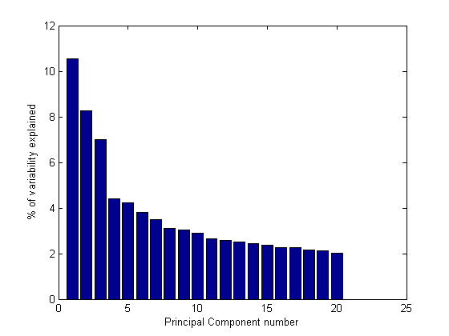
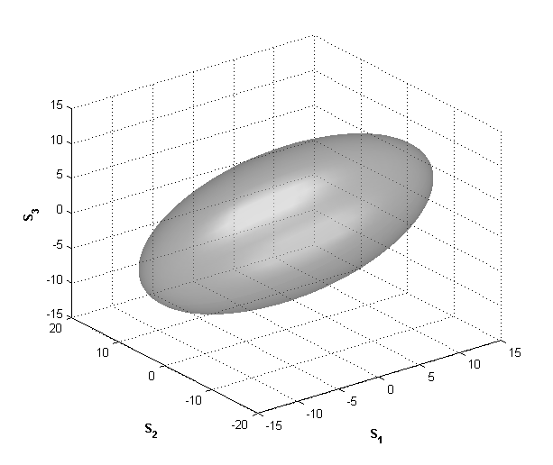
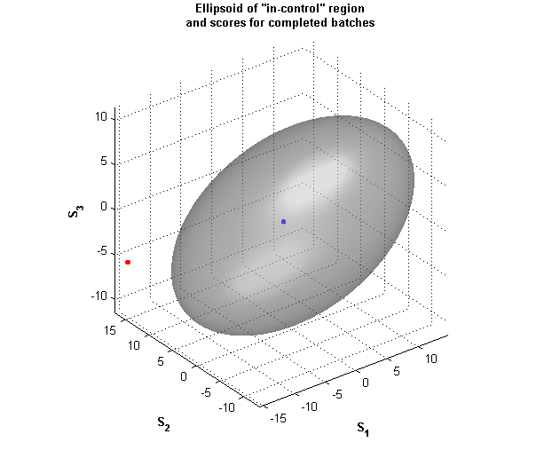
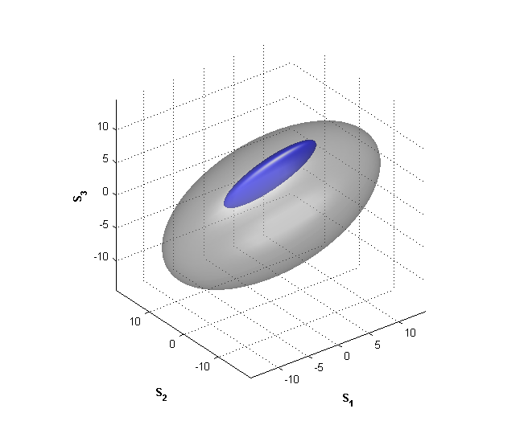
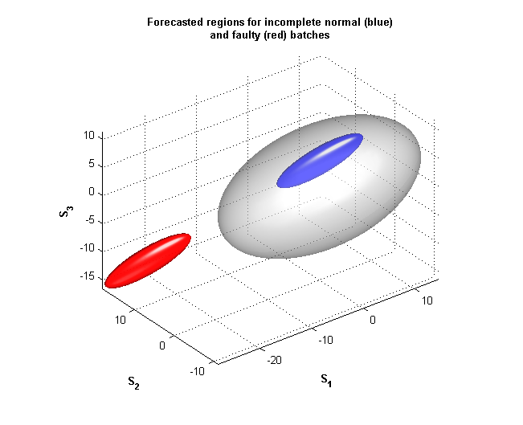

An illustrative walk-through demo that explains the application of Multi-way PCA for condition monitoring of Batch Processes.
%--------------------------------------- % Author: % Rajiv Singh (rsingh@mathworks.com) % Controls Quality Engineer % The MathWorks, Inc. Natick, MA 01760. % Date: March 19, 2003. %---------------------------------------
As discussed in the New & Notes (May, 2003) article Using Visualization Techniques for Batch Condition Monitoring, Multi-way PCA is one of the statistical techniques that is used for analyzing batch processes. By a "batch" process, we mean an industrial process, such as manufacturing a product, that goes through a pre-defined cycle and has a definite beginning and end. These processes are designed to be time varying: several inputs are added, knobs are turned, and conditions altered through-out its run to convert raw materials into a final product.
For a typical batch process, the measurements of all the relevant process variables - temperature, pressure, power consumption etc are recorded over the course of its run. These datasets tend to be very large and are accumulated over long periods of time for several runs. Because of the size of these datasets, it is not easy to analyze them or present them directly to make judgments about the performance (quality) of the process. Several statistical techniques have been developed to extract useful information from these datasets, and effectively, perform a data compression. Multi-way PCA is one of them.
Visit: http://www.mathworks.com/company/newsletter/index.shtml for the article mentioned above. __________________________________________________________________________
STEP 1: Use the recorded datasets from several known-to-be-good batches to build up a reduced dimensional PC space. This step is based upon a SVD-based analysis of the data covariance.
clc g = get(0,'defaultfigureunits'); set(0,'defaultfigureunits','normalized'); % load calibration_data whos t udat
Name Size Bytes Class t 1x95 760 double array udat 37x12x95 337440 double array Grand total is 42275 elements using 338200 bytes
Here t is time vector; udat is a 3-D matrix containing measurements of 12 variables at 95 time instants each for 37 calibration (good) batches.
Now, unfold the data for each batch into a vector and normalize all the vectors:
umat = squeeze(reshape(udat,37,1,[]));
avg = mean(umat);
st = std(umat);
umat = (umat-ones(37,1)*avg)./(ones(37,1)*st);
%
whos umatName Size Bytes Class umat 37x1140 337440 double array Grand total is 42180 elements using 337440 bytes
umat thus has 37 normalized rows, each corresponding to a different batch. We unfolded the data because an underlying assumption in Multi-way PCA approach is that each measured value of every process variable is a "distinct" variable.
Use princomp.m (Statistics Toolbox) to extract generate the principal components.
This will take a few seconds ...
[P, sc, L, t2] = princomp(umat);
P represents the matrix of principal components. We need to extract only the components that contribute the most towards explaining the process variability.
bar(L(1:20)/sum(L)*100) xlabel('Principal Component number'), ylabel('% of variability explained')
As seen from the figure, we can choose 3 to 5 components for our PCA model. Here, we use 3 components to build up a 3-D PC space:
Pc = P(1:3,:); % first 3 direction vectorsSTEP 2: Analysis of a particular batch: Is it similar to calibration batches or different?
First, we define a region of acceptable variability (also called in-control region). Let us say that the region containing 95% of the points corresponding to the 37 calibration batches is an acceptable region, meaning, if a particular batch is in this region, we say it is a good batch.
Map the calibration batches onto the PC space:
mapped_calib_data = umat*Pc.'; %3 coordinates for 37 batches in a %37 x 3 matrix; coordinates are called %"scores".
Now we generate a surface containing two standard deviations for the "good" scores represented by mapped_calib_data. Assuming a Gaussian distribution, we can generate an ellipsoidal surface using the mean and covariance information as follows:
Calculate mean and covariance of this data:
M = mean(mapped_calib_data); C = cov(mapped_calib_data);
Genarate the 95% confidence region ellipsoid:
[x,y,z] = compute_ellipsoid(M,C); % Find function COMPUTE_ELLIPSOID.M in the demo package(x, y, z) are the points on the surface of the 95% confidence ellipsoid. We can visualize this region as follows:
f = figure('pos',[0.0016,0.3867,0.4789,0.5039],'color','w'); sc = surf(x,y,z,0.6*ones([size(z),3])); % surface plot shading interp xlabel('S_1','fontweight','bold'); ylabel('S_2','fontweight','bold'); zlabel('S_3','fontweight','bold') % % Apply advanced graphics options: alpha(sc,0.4); % change transparency of ellipsoid camlight headlight % add light for 3-D effect lighting phong
With the in-control region (95% ellipsoid) ready for visualization, we can now map the data for a test batch onto the same axes. If this mapped point is inside the ellipsoid, then the test batch data is similar to the calibration data (a normal batch). Lets visualize this situation with some test data.
load testdata whos gooddata baddata
Name Size Bytes Class baddata 1x1140 9120 double array gooddata 1x1140 9120 double array Grand total is 2280 elements using 18240 bytes
We have loaded data for two batches - one normal, and the other a faulty (abnormal) one. Both vectors have been normalized using the mean and standard deviation of the calibration batches. The mapped locations for these data vectors are:
mapped_good_data = gooddata*Pc.'; % scores for a normal batch mapped_bad_data = baddata*Pc.'; % scores for a faulty batch
Plot these scores onto the same axes. The blue dot represents the scores for the good batch, while the red dot is for the faulty batch.
figure(f); hold on plot3(mapped_good_data(1),mapped_good_data(2),mapped_good_data(3),... 'b.','markersize',15); plot3(mapped_bad_data(1),mapped_bad_data(2),mapped_bad_data(3),... 'r.','markersize',15); cameratoolbar title({'Ellipsoid of "in-control" region','and scores for completed batches'},... 'fontweight','bold')
As observed, the good batch maps to a location inside the ellipsoid, while a faulty or irregular batch leads to a mapping away from the ellipsoid. Using this technique a process engineer can quickly decide whether a test batch was normal or faulty.
% __________________________________________________________________________Now we come to the most interesting part: prognostics. The analysis described above is most beneficial if it could be performed WHILE A BATCH IS RUNNING. If the condition of a batch can be forecasted in advance, then a control action (correction) can be applied to correct a possible faulty behavior. This could save a lot of costs and reduce wastage of resources.
However, the Multi-way PCA approach, as described above, cannot be applied directly since the computation of scores requires the data for entire batch history. Since each measurement of every process variable has to be treated independently (distinct), we cannot estimate the unknown values in the middle of a running batch, using the measurements available until that time. What we can do instead, is assume a distribution for the variance of the unmeasured variables.
So suppose a completed batch data vector has 100 elements. Half-way through the batch (t=T/2), we would have measured 50 of these, while the rest 50 elements are unknown at the current time. Assuming that the unmeasured ones have a Gaussian distribution (after normalization), we can compute the mean and covariance of the score coordinates. This was, an incomplete running batch would map to a region in the Principal Component Space, rather than a single point.
EXAMPLE: Let us see how this works out for the "good data" batch (variable called 'gooddata', that was loaded earlier). The entire data vector was represented by a blue dot in the PC plane. Now suppose that at a time t=T/3 (one third through the process), we wanted to forecast where the score for this batch is going to be located. Since we have only one third of the data set available, we can only guess a "region" where the score will probably be end up at the completion of the batch. Here's how we visualize this region:
available_data = gooddata(1:38); % only 1/3 of total data is available % % Compute the covariance of the training (calibration data), re-distributed % along the first 3 directions. % This will take a few seconds... L1 = L(1:3); L1 = L1(:); n = size(P,1); L2 = ((sum(L)-sum(L1))/(n-3))*ones(n-3,1); newL = [L1;L2]; S = P*diag(newL)*P.'; % Partition the covariance information: S11 = S(1:38,1:38); S12 = S(1:38,39:end); S21 = S(39:end,1:38); S22 = S(39:end,39:end); W1 = P(1:3,1:38); W2 = P(1:3,39:end); % Compute the score mean and covariance score_mean = (W1+W2*S21*inv(S11))*available_data.'; score_cov = W2*(S22-S21*inv(S11)*S12)*W2.'; %
Now we visualize the the score region the same way we visualized the in-control ellipsoid:
[xd,yd,zd] = compute_ellipsoid(score_mean,score_cov); % % f1 = figure('pos',[0.4555,0.3740,0.5086,0.5166],'color','w'); mymap1(:,:,1) = repmat(0,51,51); mymap1(:,:,2) = repmat(0,51,51); mymap1(:,:,3) = repmat(1,51,51); s = surf(xd,yd,zd,mymap1); % forecasted score region alpha(s,1); hold on sc = surf(x,y,z,0.6*ones([size(z),3]),'edgecolor','n'); % in-control region alpha(sc,0.4); shading interp xlabel('S_1','fontweight','bold'); ylabel('S_2','fontweight','bold'); zlabel('S_3','fontweight','bold') camlight headlight, lighting phong cameratoolbar
The camera toolbar let you vary the lighting and orientation of the object; you can also animate the views by orbiting the camera and the screen light.
For the sake of completion, let us also see the mapped score region for the faulty batch. Applying the same technique as before:
available_data = baddata(1:38); % only 1/3 of total data is available score_mean = (W1+W2*S21*inv(S11))*available_data.'; score_cov = W2*(S22-S21*inv(S11)*S12)*W2.'; [xf,yf,zf] = compute_ellipsoid(score_mean,score_cov); % figure(f1); mymap2(:,:,1) = repmat(1,51,51); mymap2(:,:,2) = repmat(0,51,51); mymap2(:,:,3) = repmat(0,51,51); sf = surf(xf,yf,zf,mymap2); alpha(sf,0.8) shading interp camlight headlight, lighting phong title({'Forecasted regions for incomplete normal (blue)','and faulty (red) batches'},... 'fontweight','bold') axis equal %
Using the Camera Orbit tool, it is easy to see that the blue ellipsoid is completely inside the in-control region. For process control, this means that an operator can deduce that the running batch (which is 1/3rd complete till now) will most likely end up similar to the calibration batches.
The red ellipsoid (corresponding to the faulty data) is completely disjointed from the in-control region. This indicates that it is very unlikely that this batch would end up being normal. Thus if the running batch corresponded to the red ellipsoid, an operator should take appropriate corrective action so that at the next measurement instant, the red ellipsoid is actually inside the in-control region.
Questions? E-mail the author at: rsingh@mathworks.com
echo off
set(0,'defaultfigureunits',g);